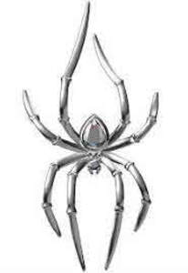

Trade Mark Journal No.2025/027 4 July 2025
UK00004190332 16 April 2025 (3,4,9,10,16,21,24,25,28)

- Class 3
- Soap; cakes of toilet soap; incense; perfumes; cosmetics and cosmetic preparations; air fragrancing preparations; make-up preparations for the face and body.
- Class 4
- Candles; perfumed candles.
- Class 9
- Eyewear; sunglasses; spectacle frames; chains for spectacles and sunglasses; spectacle cases.
- Class 10
- Sex toys.
- Class 16
- Adhesives [glues] for stationery or household purposes; wrapping paper; writing paper; passport holders; pens; pencils; stationery; writing or drawing books.
- Class 21
- Table plates; drinking glasses; cups; tableware, other than knives, forks and spoons; household containers.
- Class 24
- Household linen; bed linen; table linen, not of paper; diapered linen; brocades; tablemats of textile; bed blankets; bed covers; pillowcases; mattress covers; covers for cushions; pillow shams.
- Class 25
- Clothing of imitations of leather; latex clothing; clothing of leather; embroidered clothing; dresses; suits; jumper dresses; bath robes; berets; underwear; teddies [underclothing]; footwear; stockings; hosiery; socks; shirts; short-sleeve shirts; headwear; hats; coats; belts [clothing]; money belts [clothing]; collars [clothing]; detachable collars; nipple pasties being underclothing; layettes [clothing]; corselets; beach clothes; neckties; knickers; espadrilles; headbands [clothing]; pocket squares; jackets [clothing]; waistcoats; skirts; girdles; gloves [clothing]; ready-made clothing; knitwear [clothing]; jerseys [clothing]; sleep masks; mittens; boxer shorts; slips [underclothing]; babies' pants [underwear]; underpants; trousers; slippers; furs [clothing]; pyjamas; stocking suspenders; sock suspenders; brassieres; adhesive bras; sandals; bath sandals; beach shoes; shawls; scarves; overcoats; half-boots; boots; fur stoles; heels; tee-shirts; headscarves; veils [clothing]; dressing gowns; visors being headwear; cap peaks; wooden shoes; clothing; tights; bathing suits.
- Class 28
- Playing cards; dominoes; chess games; educational games; teddy bears; chessboards; skateboards; snowboards; surfboards; dice; dice games; draughts [games].
OXBLOOD S.R.L.
Representative: Boult Wade Tennant LLP